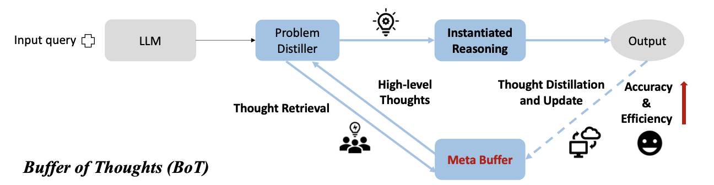

from pydantic import BaseModel, Field
from typing import Literal, Optional
import textwrap
import os
import uuid
from pprint import pprint
import re
from langgraph.graph import StateGraph, END, START, MessagesState
from langgraph.checkpoint.memory import MemorySaver
from langgraph.store.base import BaseStore
from langchain_core.runnables import RunnableConfig
from langchain_core.messages import AIMessage
from langchain_openai import ChatOpenAI
from langgraph.store.memory import InMemoryStore
from langchain_core.prompts import PromptTemplate
from trustcall import create_extractor
from langchain.embeddings import init_embeddingsThe “Buffer of Thoughts” (BoT)(Yang et al. 2024) is a framework designed to enhance the accuracy, efficiency, and robustness of Large Language Models (LLMs) in reasoning tasks.
Key Features of BoT
- Long-term memory BoT introduces a Meta-Buffer, which serves as a kind of Long-term memory, persisting across different sessions. This repository stores high-level thought-templates distilled from prior problem-solving processes. These templates are retrieved and adapted for diverse tasks, eliminating the need to design reasoning structures anew.
- Three Components
- Problem-Distiller: Responsible for extracting key information and constraints from tasks.
- Meta-Buffer: A lightweight memory storing thought-templates, which can span across various categories and domains. While six categories are mentioned in the paper (e.g., text comprehension, mathematical reasoning), the framework is not inherently restricted to this classification or number.
- Buffer-Manager: Dynamically updates the meta-buffer by distilling new templates as tasks are solved, ensuring the memory evolves with experience.
- Advantages
- Improved Accuracy: By adapting templates to different tasks, BoT achieves precise and reliable reasoning.
- Efficiency: Stored templates allow LLMs to bypass complex multi-query reasoning, streamlining the process.
- Robustness: The generalized reasoning framework ensures consistent performance across a variety of tasks.
Notebook Objective
- Demonstrates the implementation of BoT using LangGraph, highlighting Long-term memory capabilities via a
BaseStoreobject for persistent storage and retrieval of thought-templates.
- Showcases LangGraph’s support for dynamic and adaptive memory, enhancing LLMs’ reasoning capabilities within the BoT framework.

Setup
Prompts
We start by writing down the relevant prompts for each of the three components. They are copy-pasted from the original publication.
problem_distiller_prompt = textwrap.dedent(
"""
## Problem-Distiller
You are a highly professional and intelligent expert in information distillation. Your role is to extract essential information from user input queries to solve problems effectively. You also transform this extracted information into a suitable format based on the type of issue.
---
### Task Instructions
1. **Key Information**:
- Extract values and key variables from the user input.
- Ensure all essential information required to solve the problem is provided.
- Hand over this distilled information to the respective expert for task resolution.
2. **Restrictions**:
- Identify the objective of the problem.
- Outline any corresponding constraints that must be adhered to.
3. **Distilled Task**:
- Extend the problem based on the extracted key information and constraints.
- Summarize a meta problem that addresses the user query and accommodates more input and output variations.
- Incorporate the real-world scenario of the extended problem.
- Define types of key variables and information constraints from the original problem to restrict variables in the extended problem.
- Use the input key information from the user query as an example to solve the problem.
"""
).strip()The Instantiate Reasoning step is part of the Meta-Buffer and adapts thought-templates to solve specific tasks. It either instantiates a retrieved template with task-specific reasoning structures or assigns a general template for new tasks, ensuring efficient and accurate problem-solving.
instantiate_reasoning_prompt = textwrap.dedent(
"""
## Meta Reasoner
You are a Meta Reasoner who is extremely knowledgeable in various fields, including Computer Science, Math, Physics, Literature, History, Chemistry, Logical Reasoning, Culture, and Language. You are also skilled in applying high-level reasoning structures for different tasks.
### Reasoning Structures:
1. **Prompt-based Structure**:
- **Best For**: Common Sense Reasoning, Application Scheduling.
2. **Procedure-based Structure**:
- **Best For**: Creative tasks like Creative Language Generation, and Text Comprehension.
3. **Programming-based Structure**:
- **Best For**: Mathematical Reasoning, Code Programming.
- Can transform real-world problems into programming problems to solve efficiently.
---
### Reasoning Instantiation
**Your Task:**
1. **Contextual Analysis**: Deliberately consider the context and the problem distilled from the Problem-Distiller. Use your understanding to identify a suitable domain expert for solving the problem.
2. **Structure Selection**: Based on the distilled information, select one of the reasoning structures suitable for addressing the problem.
3. **Template Application**: If a thought-template is provided, directly follow it to instantiate the solution for the given problem.
"""
).strip()The following prompts outline the behavior of the Buffer-Manager and the process for creating a new template when no suitable template is found during the Meta-Buffer’s template retrieval step. This process, known as Template Distillation, involves two key steps: first, summarizing the task using the distilled task description and the derived solution; second, leveraging this summary to perform a contextual search for in-task and cross-task examples, which are then used as few-shot examples to generate the new template.
# prompt to infer the core task summary. That one is needed for contextual search for relevant in-task and cross-task templates as few-shot examples for generating the
core_task_summarization_prompt = textwrap.dedent(
"""
## Prompt for Template Distillation:
**User Input**:
**Problem Description**: {distilled_task}
**Solution Steps or Code**: {solution_steps}
1. **Core task summarization**:
Identify and describe the basic type and core challenges of the problem, such as classifying it as a mathematical problem (e.g., solving a quadratic equation), a data structure problem (e.g., array sorting), an algorithm problem (e.g., search algorithms), etc. And analyze the most efficient way to solve the problem.
"""
).strip()
template_distiller_prompt = textwrap.dedent(
"""
## Prompt for Template Distillation (continued)
2. **Solution Steps Description**:
Outline the general solution steps, including how to define the problem, determine variables, list key equations or constraints, choose appropriate solving strategies and methods, and how to verify the correctness of the results.
3. **General Answer Template**:
Based on the above analysis, propose a template or approach that can be widely applied to this type of problem, including possible variables, functions, class definitions, etc. If it is a programming problem, provide a set of base classes and interfaces that can be used to construct solutions to specific problems.
Please ensure that your response is highly concise and structured, so that specific solutions can be transformed into generalizable methods.
[Optional] Here are some exemplars of the thought-template:
<in-task-examples>
{in_task_examples}
<in-task-examples>
<cross-task-examples>
{cross_task_examples}
<cross-task-examples>
"""
).strip()Some prompts, provided to the Trustcall Executors defined in the next section, are used to extract structured output from the plain text responses of the LLM.
structure_prompt = textwrap.dedent(
"""
Extract the items of the 'ThoughtTemplate' Pydantic class from the previous conversation.
<convo>
{conversation}
</convo>
"""
).strip()
distilled_task_extractor_prompt = textwrap.dedent(
"""
Extract the content of the 'Extended Problem' subsection within the 'Distilled Task' section from the entire distilled problem description.
<distilled-problem>
{distilled_problem}
<distilled-problem>
"""
).strip()Templates
A Pydantic class is used to digest and extract Thought Templates in the required format. It consists of three sections: a “Task Description” which provides a brief overview of the task; a “Solution Description” which outlines a high-level approach to solving the task; and finally, the “Thought-Template” itself, which offers a step-by-step guide for solving the problem.
class ThoughtTemplate(BaseModel):
"""Defining the three fields of the Thought-Template"""
task_description: str = Field(description="Task Description")
solution_description: str = Field(description="Solution Description")
thought_template: str = Field(description="Thought-Template")Runnables
The Lang-Chain Runnables encapsulating the main logic of the subsequently defined nodes of the graph.
# Setup Large Language Model (LLM)
LLM = ChatOpenAI(
model_name="gpt-4o-mini",
openai_api_key=os.getenv("OPENAI_API_KEY"),
temperature=0.0,
)# Define Trustcall instance for sane extraction of the Thought-Template items: Task Description, Solution Description, Thought-Template
structure_template_text = create_extractor(
LLM, tools=[ThoughtTemplate], tool_choice="ThoughtTemplate"
)
# Extract the distilled task from the distilled problem. Required for the semantic search in the Template retrieval step.
distilled_task_extractor = (
PromptTemplate.from_template(
template=distilled_task_extractor_prompt) | LLM
)Long-term memory
All Thought-Templates are stored in a Long-term memory to ensure their availability across sessions. The Long-term memory supports semantic search on the Task Description of each Thought-Template, which plays a crucial role in two steps: first, during template retrieval in the Meta-Buffer, where a relevant template is identified for the problem; and second, during Template Distillation by the Buffer-Manager, where it is used to retrieve relevant in-task and cross-task few-shot examples for generating a new template.
# Create store with semantic search enabled
template_store = InMemoryStore(
index={
"embed": init_embeddings(model="openai:text-embedding-3-small"),
"dims": 1536,
# semantic search is only conducted on the task_description field of a Thought Template
"fields": ["task_description"],
}
)/var/folders/9y/v7607j0j5vn1tnw1_fjpl4s40000gn/T/ipykernel_71541/2854118368.py:4: LangChainBetaWarning: The function `init_embeddings` is in beta. It is actively being worked on, so the API may change.
"embed": init_embeddings(model="openai:text-embedding-3-small"),Optionally, one can populate the Thought-Template storage with predefined templates like the six ones listed in the appendix of (Yang et al. 2024) or one can also start with a blank template store.
user_id = "user_123"
long_term_memory = "thought_templates"
namespace_for_memory = (user_id, long_term_memory)States
The state of the LangGraph agent is defined by inheriting from MessageState, the default state of LangGraph that stores the message history. Additionally, two more attributes are added, whose values are manipulated during the BoT agent’s actions.
class BoTState(MessagesState):
# Thought-Template possibly extracted from the Long-term memory
template_text: Optional[str]
# part of the distilled problem description. Required for similarity computations
distilled_task: strNodes
Nodes of the LangGraph agent which update the state. Each Node maps onto each step of the BoT agent.
def problem_distiller(state: BoTState) -> dict:
"""
Distills task information from the forwarded problem description using a Language Model (LLM).
This function represents the problem distillation step in the Buffer of Thoughts (BoT) framework.
It processes the most recent message, which is the original problem description, in the agent's
state to extract a distilled representation of the task and updates the state with the distilled task.
Parameters
----------
state : BoTState
The current state of the agent, which contains the message history and other relevant attributes.
Returns
-------
dict
A dictionary with the following keys:
- "distilled_task" : str
The distilled task description extracted from the latest message which is the problem description.
- "messages" : str
The distilled problem description which contains the distilled task description but also a key information and problem constraints.
"""
# Invoke the LLM with the Problem-Distiller prompt and the latest message
distilled_task = LLM.invoke(
[problem_distiller_prompt, state["messages"][-1]])
# Extract the distilled task description from the LLM response
return {
"distilled_task": distilled_task_extractor.invoke(
distilled_task.content
).content,
"messages": distilled_task, # Update state with the distilled task message
}def template_retrieval(
state: BoTState, config: RunnableConfig, store: BaseStore
) -> dict:
"""
Retrieves the most relevant Thought-Template for a given task using semantic search.
This function conducts a semantic search between the distilled task and the task descriptions
of Thought-Templates stored in the Long-term memory. It selects the template with the highest
similarity score if it exceeds a user-defined threshold. If no suitable template is found, the
template field is left blank.
Parameters
----------
state : BoTState
The current state of the agent, containing the distilled task and other relevant information.
config : RunnableConfig
Configuration object containing user-defined parameters, including the retrieval threshold.
store : BaseStore
The Long-term memory store where Thought-Templates are stored and queried.
Returns
-------
dict
A dictionary with the following key:
- "template_text" : str or None
The text of the retrieved Thought-Template if it satisfies the similarity threshold,
otherwise None.
"""
# Perform semantic search between the distilled task and templates in Long-term memory
items = store.search(namespace_for_memory,
query=state["distilled_task"], limit=1)
template = items.pop() if items else None
# Check if the retrieved template exceeds the similarity threshold
if template and template.score > config["configurable"]["retrieval_threshold"]:
template_text = {
key: val for key, val in template.value.items() if key != "task_description"
}
return {"template_text": template_text}
else:
return {"template_text": None}def instantiate_reasoning(state: BoTState) -> dict:
"""
Executes the main solution step for the BoT agent by attempting to solve the problem.
This function represents the core reasoning process in the Buffer of Thoughts (BoT) framework.
It uses either a retrieved Thought-Template to guide the solution or, if no template is available,
applies a general solution approach as defined in the prompt.
Parameters
----------
state : BoTState
The current state of the agent, containing the task description, Thought-Template (if retrieved),
and other relevant information.
Returns
-------
dict
A dictionary with the following key:
- "messages" : str
The result of the reasoning step, either guided by the Thought-Template or generated
using a general approach.
"""
if state["template_text"]:
# Reasoning step guided by the retrieved Thought-Template
return {
"messages": LLM.invoke(
[
state["messages"][-1],
(
"user",
instantiate_reasoning_prompt
+ f"\n\n<thought-template>\n{state['template_text']}\n<thought-template>",
),
]
)
}
else:
# Reasoning step using a general solution approach
return {
"messages": LLM.invoke(
[state["messages"][-1], ("user", instantiate_reasoning_prompt)]
)
}def template_distillation(
state: BoTState, config: RunnableConfig, store: BaseStore
) -> dict:
"""
Distills a new Thought-Template when no suitable template is found in the Long-term memory.
This function is used when the Buffer of Thoughts (BoT) agent fails to retrieve a proper thought
template. It distills a new template by analyzing the task description and the derived solution.
Relevant in-task and cross-task examples (i.e., similar and diverse Thought-Templates) are retrieved
from the Long-term memory to guide the derivation of a new template.
Parameters
----------
state : BoTState
The current state of the agent, containing the distilled task, derived solution, and other relevant details.
config : RunnableConfig
Configuration object containing user-defined parameters, including thresholds and limits for in-task
and cross-task template retrieval.
store : BaseStore
The Long-term memory store where Thought-Templates are stored and queried.
Returns
-------
dict
A dictionary containing:
- "messages" : str
The distilled Thought-Template generated by the BoT agent, guided by the retrieved in-task
and cross-task examples.
"""
# Summarize the core task and solution steps
core_task_summarization_msg = core_task_summarization_prompt.format(
distilled_task=state["distilled_task"],
solution_steps=state["messages"][-1].content,
)
# Generate task summary using LLM
task_summary = LLM.invoke(core_task_summarization_msg)
# Search for relevant Thought-Templates in the Long-term memory
items = store.search(
namespace_for_memory,
query=task_summary.content,
limit=config["configurable"]["limit"],
)
# Separate templates into in-task and cross-task examples based on their similarity scores
in_task_l = [
template
for template in items
if template.score > config["configurable"]["in_task_threshold"]
]
in_task = in_task_l.pop(0) if in_task_l else None
cross_task_l = [
template
for template in items
if template.score <= config["configurable"]["in_task_threshold"]
]
cross_task = cross_task_l.pop(0) if cross_task_l else None
# Use in-task and cross-task examples to guide the generation of a new Thought-Template
return {
"messages": LLM.invoke(
[
("user", core_task_summarization_msg), # Task summarization
task_summary, # Task summary message
(
"user",
template_distiller_prompt.format(
task_summary=task_summary,
in_task_examples=in_task.value if in_task else {},
cross_task_examples=cross_task.value if cross_task else {},
),
),
]
)
}def dynamic_meta_buffer_update(
state: BoTState, config: RunnableConfig, store: BaseStore
) -> dict:
"""
Structures the distilled template into predefined sections and stores it in the Long-term memory.
This function processes the distilled template by organizing it into three sections:
'Task Description', 'Solution Description', and 'Thought-Template', as defined by the Pydantic class.
The structured template is then stored in the Long-term memory in JSON format.
Parameters
----------
state : BoTState
The current state of the agent, containing the distilled template and related data.
config : RunnableConfig
Configuration object with user-defined parameters and metadata for storing the structured template.
store : BaseStore
The Long-term memory store where the structured template is saved in JSON format.
Returns
-------
dict
A dictionary containing:
- "messages" : str
A message confirming the successful update of the Meta-Buffer.
"""
# Structure the distilled template into defined sections using the structure prompt
result = structure_template_text.invoke(
{
"messages": [
structure_prompt.format(
conversation=state["messages"][-1].content)
]
}
)
# Extract the structured response and associated metadata
r, rmeta = result["responses"].pop(), result["response_metadata"].pop()
# Store the structured template in the Long-term memory
store.put(
(user_id, long_term_memory), # Memory namespace and user context
rmeta.get("json_doc_id", str(uuid.uuid4())), # Unique document ID
r.model_dump(mode="json"), # Save structured template as JSON
)
# Return confirmation of Meta-Buffer update
return {"messages": "Meta-Buffer updated"}Conditional Edges
In case a proper Thought-Template was found during the Thought-Template Retrieval step, we skip the distillation of a new template.
def update_required(state: BoTState) -> Literal["Buffer-Manager", "END"]:
if state["template_text"]:
return "END"
else:
return "Buffer-Manager"Build the Graph
The graph representing the BoT agent consists of two sub-graphs: the Meta-Buffer and the Buffer-Manager. The Meta-Buffer handles the Template Retrieval and Reasoning Instantiation steps, while the Buffer-Manager generates a new Thought-Template and updates the Long-term memory if the Template Retrieval step fails to find a matching template for the problem.
meta_buffer = StateGraph(BoTState)
# add nodes
meta_buffer.add_node("Template Retrieval", template_retrieval)
meta_buffer.add_node("Instantiated Reasoning", instantiate_reasoning)
# add edges
meta_buffer.add_edge(START, "Template Retrieval")
meta_buffer.add_edge("Template Retrieval", "Instantiated Reasoning")
meta_buffer.add_edge("Instantiated Reasoning", END)<langgraph.graph.state.StateGraph at 0x109eb8800>buffer_manager = StateGraph(BoTState)
# add nodes
buffer_manager.add_node("Template Distillation", template_distillation)
buffer_manager.add_node("Dynamic Update", dynamic_meta_buffer_update)
# add edges
buffer_manager.add_edge(START, "Template Distillation")
buffer_manager.add_edge("Template Distillation", "Dynamic Update")
buffer_manager.add_edge("Dynamic Update", END)<langgraph.graph.state.StateGraph at 0x109eb8560>memory = MemorySaver()
bot_graph = StateGraph(BoTState)
# add nodes
bot_graph.add_node("Problem-Distiller", problem_distiller)
bot_graph.add_node("Meta-Buffer", meta_buffer.compile(checkpointer=memory))
bot_graph.add_node(
"Buffer-Manager", buffer_manager.compile(checkpointer=memory))
# add edges
bot_graph.add_edge(START, "Problem-Distiller")
bot_graph.add_edge("Problem-Distiller", "Meta-Buffer")
bot_graph.add_conditional_edges(
"Meta-Buffer", update_required, {
"Buffer-Manager": "Buffer-Manager", "END": END}
)
bot_graph.add_edge("Buffer-Manager", END)
# compile graph
bot_agent = bot_graph.compile(checkpointer=memory, store=template_store)from IPython.display import Image, display
# View
display(Image(bot_agent.get_graph(xray=1).draw_mermaid_png()))
Run the Agent
We run the agent twice for two different instances of the Game of 24(Yao et al. 2023) where one needs to create a formula from a list of integers such that the result is 24.
from agentic.download_bot_datasets import *data = [
{
"numbers": [3, 3, 6, 6],
"solutions": ["(6/3+6)×3"],
"solvable": True,
"amt": 30.23,
"solved_rate": 0.575,
"mean_time": 14.99,
"std_time": 9.07,
},
{
"numbers": [1, 1, 1, 11],
"solutions": ["(11+1)\u00d7(1+1)"],
"solvable": True,
"amt": 5.28,
"solved_rate": 0.974,
"mean_time": 5.6,
"std_time": 1.67,
},
]# wrap the instances of the dataset into some prompt
prompts = [
f"""
Manipulate four numbers with basic arithmetic operations to reach 24.
<numbers>
{rec['numbers']}
<numbers>
"""
for rec in data
]config = RunnableConfig(
max_concurrency=5,
configurable={
# ensuring a fresh run of the agent each time it is kicked off
"thread_id": "24-game-0",
"retrieval_threshold": 0.6,
"in_task_threshold": 0.8,
"limit": 100,
},
)
# Run the agent by streaming the graph
for event in bot_agent.stream(
input={"messages": prompts[0]}, config=config, stream_mode="values"
):
if event["messages"]:
event["messages"][-1].pretty_print()================================ Human Message =================================
Manipulate four numbers with basic arithmetic operations to reach 24.
<numbers>
[3, 3, 6, 6]
<numbers>
================================== Ai Message ==================================
### Key Information Extracted:
- **Objective**: Manipulate the numbers [3, 3, 6, 6] using basic arithmetic operations (addition, subtraction, multiplication, division) to reach the target number 24.
- **Key Variables**:
- Numbers: 3, 3, 6, 6
- Target: 24
- **Operations Allowed**: Addition (+), Subtraction (-), Multiplication (*), Division (/)
### Constraints:
- Each number must be used exactly once.
- Only basic arithmetic operations are allowed.
- The solution must equal exactly 24.
### Distilled Task:
- **Extended Problem**: Given a set of four numbers, determine if it is possible to combine them using basic arithmetic operations to reach a specified target number. This can be generalized to any set of four numbers and any target number.
- **Real-World Scenario**: This problem can be applied in various fields such as game design (e.g., number puzzles), education (teaching arithmetic), and algorithm development (solving combinatorial problems).
### Types of Key Variables and Information Constraints:
- **Key Variables**:
- Set of numbers (e.g., [a, b, c, d])
- Target number (e.g., T)
- **Information Constraints**:
- The number of elements in the set must be four.
- Each number must be used exactly once.
- The operations must be limited to basic arithmetic.
### Example Solution:
Using the numbers [3, 3, 6, 6], one possible way to reach 24 is:
1. (6 / 3) = 2
2. (6 * 3) = 18
3. (18 + 2) = 20
4. (20 + 4) = 24
This example illustrates how to manipulate the numbers to achieve the target.
================================== Ai Message ==================================
### 1. Contextual Analysis
The problem at hand involves manipulating a specific set of numbers ([3, 3, 6, 6]) using basic arithmetic operations to achieve a target number (24). This type of problem is commonly found in mathematical puzzles and games, where the goal is to use a limited set of numbers and operations to reach a specific result.
Given the nature of the problem, a suitable domain expert would be a **Mathematician** or a **Game Designer** who specializes in puzzles and combinatorial problems. They would have the expertise to explore various combinations of operations and numbers to find a solution.
### 2. Structure Selection
For this problem, the **Programming-based Structure** is the most appropriate choice. This structure is well-suited for mathematical reasoning and can efficiently handle the combinatorial nature of the problem by systematically exploring different combinations of numbers and operations.
### 3. Template Application
Using the Programming-based Structure, we can outline a solution approach as follows:
#### Problem Definition
- **Input**: A list of numbers [3, 3, 6, 6] and a target number 24.
- **Output**: A valid expression that equals 24 using each number exactly once.
#### Steps to Solve
1. **Generate Permutations**: Create all possible permutations of the numbers to explore different orders.
2. **Generate Combinations of Operations**: For each permutation, generate all possible combinations of the four basic arithmetic operations (+, -, *, /).
3. **Evaluate Expressions**: For each combination of numbers and operations, evaluate the expression to check if it equals 24.
4. **Return Valid Expressions**: If a valid expression is found, return it; otherwise, indicate that no solution exists.
#### Pseudocode
```python
import itertools
import operator
# Define the numbers and target
numbers = [3, 3, 6, 6]
target = 24
# Define operations
operations = [operator.add, operator.sub, operator.mul, operator.truediv]
operation_symbols = ['+', '-', '*', '/']
# Function to evaluate expressions
def evaluate_expression(nums, ops):
# Start with the first number
result = nums[0]
for i in range(3): # There are 3 operations for 4 numbers
result = ops[i](result, nums[i + 1])
return result
# Generate all permutations of numbers and combinations of operations
for num_perm in itertools.permutations(numbers):
for ops in itertools.product(operations, repeat=3):
try:
if evaluate_expression(num_perm, ops) == target:
# Construct the expression string
expression = f"{num_perm[0]} {operation_symbols[operations.index(ops[0])]} {num_perm[1]} {operation_symbols[operations.index(ops[1])]} {num_perm[2]} {operation_symbols[operations.index(ops[2])]} {num_perm[3]}"
print(f"Valid expression: {expression} = {target}")
except ZeroDivisionError:
continue # Skip division by zero cases
```
### Conclusion
By following this structured approach, we can systematically explore the combinations of numbers and operations to find a valid expression that equals 24. This method leverages programming techniques to efficiently solve the problem, making it suitable for a mathematician or game designer looking to create or solve similar puzzles.
================================ Human Message =================================
Meta-Buffer updatedFor the Game of 24 problem, the agent retrieves the Coding Thought-Template and uses it to derive a Python program as a generic solution (caveat: the solution is printed in Polish notation).
def extract_python_blocks(text: str) -> list[str]:
"""
Extracts the content between ```python ... ``` blocks from the given string.
Parameters
----------
text
The input string containing Python code blocks.
Returns
-------
code
A list of strings, each containing the content of a Python code block.
"""
# Regex to match content between ```python ... ```
pattern = r"```python\n(.*?)```"
# Use re.DOTALL to match across newlines
matches = re.findall(pattern, text, re.DOTALL)
return matches
# retrieve the state of the graph which records the entire chat
state = bot_agent.get_state(config)
# get the last AI message which contains the solution
lst_ai_message = [
mess for mess in state.values["messages"] if isinstance(mess, AIMessage)
].pop()
# retrieve the code block from the solution text
code = extract_python_blocks(lst_ai_message.content).pop()
exec(code)3 * (6 + (6 / 3))The BoT-Agent generates a new Thought-Template for the 24-Game problem and updates the Long-term memory (aka Meta-Buffer).
# Get a list of all keys stored in the specified namespace within the template store
keys = list(template_store._data[namespace_for_memory])
# Retrieve the last key in the list if there are any keys; otherwise, set key to None
key = keys.pop() if keys else None
# If a key was found, retrieve the corresponding value from the template store and print it in a human-readable format
if key:
pprint(template_store.get(namespace_for_memory, key).value){'solution_description': 'A Python class `ArithmeticSolver` that takes a list '
'of four integers and a target integer, generates all '
'possible arithmetic expressions using permutations '
'of the numbers and combinations of operations, and '
'evaluates them to find a valid expression that '
'equals the target.',
'task_description': 'Combine a set of four numbers using basic arithmetic '
'operations to reach a target number.',
'thought_template': '1. Define the Problem: Identify the goal and input '
'format. 2. Determine Variables: Input and output '
'variables. 3. List Key Equations or Constraints: Basic '
'operations and handling exceptions. 4. Choose '
'Appropriate Solving Strategies: Use permutations and '
'combinations. 5. Verify the Correctness of Results: '
'Check evaluated expressions and handle exceptions.'}We run the agent a second time for another example of the 24-game.
# update the thread, i.e., start a new conversation
config["configurable"]["thread_id"] = "24-game-1"
# Run the agent by streaming the graph
for event in bot_agent.stream(
input={"messages": prompts[1]}, config=config, stream_mode="values"
):
if event["messages"]:
event["messages"][-1].pretty_print()================================ Human Message =================================
Manipulate four numbers with basic arithmetic operations to reach 24.
<numbers>
[1, 1, 1, 11]
<numbers>
================================== Ai Message ==================================
### Key Information Extracted:
- **Objective**: Manipulate the numbers [1, 1, 1, 11] using basic arithmetic operations to reach the target number 24.
- **Key Variables**:
- Numbers: 1, 1, 1, 11
- Target: 24
- **Operations Allowed**: Basic arithmetic operations (addition, subtraction, multiplication, division).
### Constraints:
- Must use all four numbers.
- Each number can be used only once.
- Only basic arithmetic operations are allowed.
### Distilled Task:
- **Extended Problem**: Given a set of four numbers, determine if it is possible to manipulate them using basic arithmetic operations to reach a specified target number. This can be generalized to any set of four numbers and any target number.
- **Real-World Scenario**: This problem can be applied in various fields such as game design (e.g., number puzzles), education (teaching arithmetic), and algorithm development (solving combinatorial problems).
### Types of Key Variables and Information Constraints:
- **Key Variables**:
- Set of numbers (e.g., [a, b, c, d])
- Target number (e.g., T)
- **Information Constraints**:
- The set must contain exactly four numbers.
- Each number must be used exactly once.
- Only basic arithmetic operations are permitted.
### Example to Solve the Problem:
Using the numbers [1, 1, 1, 11]:
1. Combine the three 1s: \(1 + 1 + 1 = 3\)
2. Multiply the result by 11: \(3 \times 11 = 33\)
3. Subtract 9 (which can be formed by \(11 - 1 - 1\)): \(33 - 9 = 24\)
Thus, the solution to the problem is achievable with the given numbers and operations.
================================== Ai Message ==================================
### Contextual Analysis
The problem at hand involves manipulating a specific set of numbers ([1, 1, 1, 11]) using basic arithmetic operations to achieve a target number (24). This type of problem falls under the domain of mathematical reasoning and combinatorial problem-solving. A suitable domain expert for this task would be a mathematician or a computer scientist with expertise in algorithm design, particularly in combinatorial algorithms.
### Structure Selection
Given the nature of the problem, which involves generating combinations and evaluating expressions, the **Programming-based Structure** is the most appropriate choice. This structure allows for the transformation of the problem into a programming context, where we can systematically explore all possible combinations and permutations of the numbers and operations.
### Template Application
Following the provided thought-template, we can instantiate the solution as follows:
1. **Problem Definition**:
- **Input**: A list of four numbers: `[1, 1, 1, 11]` and a target number: `24`.
- **Output**: A valid arithmetic expression that equals the target number.
2. **Determine Variables**:
- **Input Variables**:
- `numbers`: List of four integers, e.g., `[1, 1, 1, 11]`.
- `target`: Integer representing the target number, e.g., `24`.
- **Output Variable**:
- `expression`: String representation of the valid arithmetic expression.
3. **List Key Equations or Constraints**:
- Each number must be used exactly once.
- The operations allowed are addition (`+`), subtraction (`-`), multiplication (`*`), and division (`/`).
- Division by zero must be avoided.
4. **Choose Appropriate Solving Strategies and Methods**:
- **Permutations**: Generate all possible arrangements of the input numbers.
- **Combinations of Operations**: Generate all possible combinations of the four basic arithmetic operations.
- **Evaluation**: Implement a method to evaluate the expressions formed by the numbers and operations.
5. **Verify Correctness of Results**:
- Check if the evaluated expression equals the target (24).
- Handle exceptions (e.g., division by zero) gracefully.
### Implementation Example
Here is a Python implementation that follows the outlined strategy:
```python
import itertools
import operator
def evaluate_expression(numbers, operations):
# Create a string representation of the expression
expression = f"({numbers[0]} {operations[0]} {numbers[1]}) {operations[1]} ({numbers[2]} {operations[2]} {numbers[3]})"
try:
# Evaluate the expression
return eval(expression)
except ZeroDivisionError:
return None
def find_expression(numbers, target):
ops = ['+', '-', '*', '/']
for num_perm in itertools.permutations(numbers):
for ops_comb in itertools.product(ops, repeat=3):
result = evaluate_expression(num_perm, ops_comb)
if result == target:
return f"{num_perm[0]} {ops_comb[0]} {num_perm[1]} {ops_comb[1]} {num_perm[2]} {ops_comb[2]} {num_perm[3]} = {target}"
return "No valid expression found."
# Example usage
numbers = [1, 1, 1, 11]
target = 24
print(find_expression(numbers, target))
```
### Conclusion
This implementation systematically explores all permutations of the numbers and combinations of operations to find a valid expression that equals the target number. It adheres to the constraints and handles exceptions appropriately, providing a robust solution to the problem.This time the agent re-used the previously generated thought template and did not distill a new one for deriving the solution.
# retrieve the state of the graph which records the entire chat
state = bot_agent.get_state(config)
# get the last AI message which contains the solution
lst_ai_message = [
mess for mess in state.values["messages"] if isinstance(mess, AIMessage)
].pop()
# retrieve the code block from the solution text
code = extract_python_blocks(lst_ai_message.content).pop()
exec(code)(1 + 1) * (1 + 11)from nbdev.showdoc import *import nbdev
nbdev.nbdev_export()References
Yang, Ling, Zhaochen Yu, Tianjun Zhang, Shiyi Cao, Minkai Xu, Wentao Zhang, Joseph E. Gonzalez, and Bin Cui. 2024. “Buffer of Thoughts: Thought-Augmented Reasoning with Large Language Models.” https://arxiv.org/abs/2406.04271.
Yao, Shunyu, Dian Yu, Jeffrey Zhao, Izhak Shafran, Thomas L. Griffiths, Yuan Cao, and Karthik Narasimhan. 2023. “Tree of Thoughts: Deliberate Problem Solving with Large Language Models.” https://arxiv.org/abs/2305.10601.